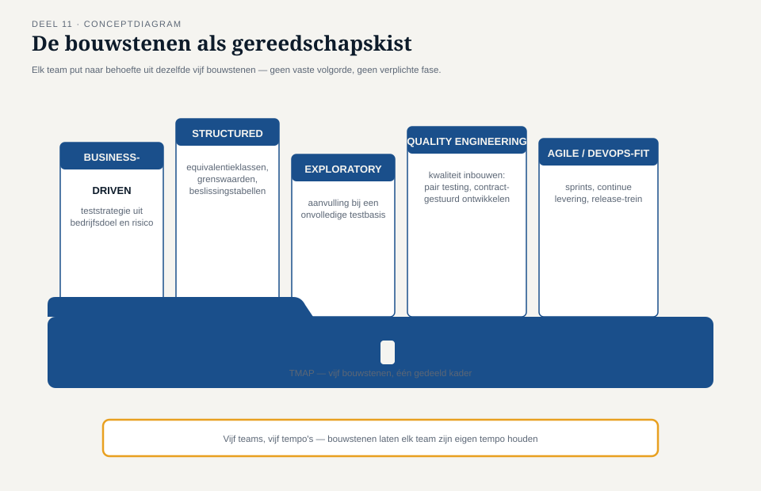
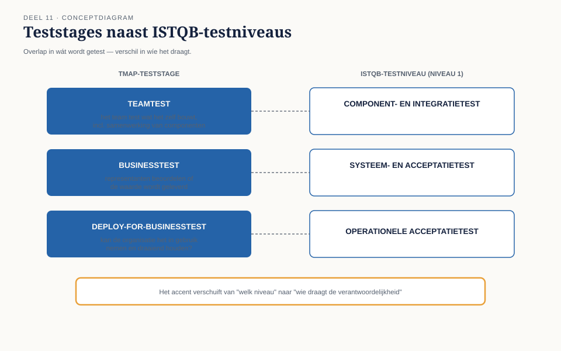
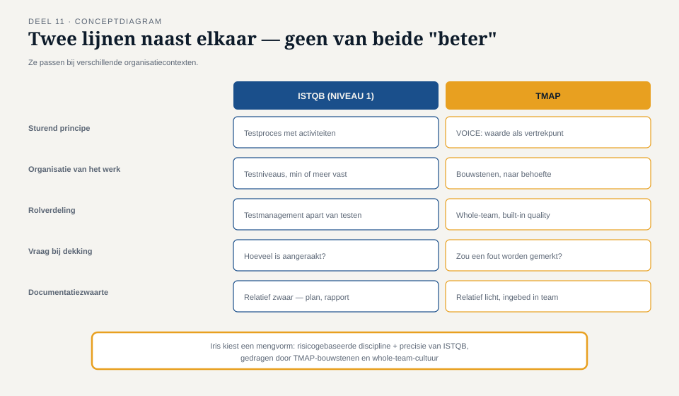

Deel 11 — TMAP integraal
Reader · Ductus-cursus Testen en Kwaliteitsborging · niveau 2 (professional) · deel 11 van 30
Casus: Programma Mutatieplatform, achttien maanden na de mislukte livegang van WGP 2.0. Iris Verweij is aangesteld als quality lead van het programma.
Leerdoelen
Na dit deel kun je:
- het VOICE-model volledig toepassen op een teststrategie;
- de bouwstenen van TMAP (business-driven testmanagement, structured/exploratory, agile/DevOps-fit, kwaliteitsengineering) onderscheiden en combineren;
- de TMAP-teststages plaatsen naast de ISTQB-testniveaus uit niveau 1 en het verschil in nadruk beargumenteren;
- mutatietesten uitleggen, uitvoeren en interpreteren, inclusief het verschil met dekkingsmeting uit niveau 1;
- de whole-team-benadering en built-in quality toepassen op een programma met meerdere teams;
- je voorbereiden op het examen "TMAP: Quality for cross-functional teams".
Studielast: één dagdeel klassikaal, circa drie uur zelfstudie.
1. Een programma, geen project
Het Programma Mutatieplatform vervangt vier bestaande mutatiekanalen (werkgeversportaal, salarisverwerkerskoppeling, bestandsaanlevering, telefonische mutatie) door één keten. Vijf teams, twee externe partijen, tweeëneenhalf jaar doorlooptijd. Frank Duiker, programmadirecteur, stuurt op datum en vraagt Iris bij elk overleg naar "een percentage".
Iris herkent het patroon uit WGP 2.0 onmiddellijk — en weet nu ook waarom het daar misging. Dit keer kiest zij bewust niet voor een klassiek testplan-document met fasen, maar voor de TMAP-gedachte die in niveau 1 telkens als "lens" naast de ISTQB-stof lag: kwaliteit is een teambrede verantwoordelijkheid, gedragen door bouwstenen die het team naar behoefte inzet, in plaats van een proces dat wordt doorlopen.
Kernzin — Een programma van deze schaal overleeft geen testplan dat eenmalig wordt geschreven en daarna wordt uitgevoerd. Het overleeft alleen een aanpak die zich net zo vaak aanpast als het programma zelf verandert.
2. Het VOICE-model, volledig
Niveau 1 introduceerde VOICE als lens: waarde, doelstellingen, indicatoren, veranderingen, evaluatie. Hier wordt het instrument.
- Waarde (Value) — de bedrijfswaarde die het Mutatieplatform moet opleveren: mutaties komen sneller, foutlozer en met minder handmatig werk aan bij de kernadministratie. Niet "het systeem werkt" maar "de keten levert wat de organisatie ervan verwacht".
- Doelstellingen (Objectives) — concrete, meetbare vertalingen van die waarde: doorlooptijd van mutatie tot verwerking onder de 24 uur, foutpercentage onder 0,1%, handmatige interventie bij minder dan 2% van de mutaties.
- Indicatoren (Indicators) — de metingen die aantonen of de doelstellingen worden gehaald, en — cruciaal, na de les uit niveau 1 deel 9 — nooit een enkele indicator in isolatie.
- Veranderingen (Change) — wat er moet gebeuren als een indicator afwijkt: bijsturen in de bouw, de teststrategie aanscherpen, of de doelstelling zelf herzien.
- Evaluatie (Evaluation) — periodiek, expliciet vaststellen of waarde, doelstellingen en indicatoren nog kloppen — vergelijkbaar met de herhaalde risico-inschatting uit niveau 1, deel 7, maar nu op het niveau van het hele programma.

2.1 VOICE toegepast op het Mutatieplatform
| VOICE-element | Invulling voor het Mutatieplatform |
|---|---|
| Waarde | Snellere, foutloze mutatieverwerking met minder handmatig werk |
| Doelstellingen | Doorlooptijd < 24 uur, foutpercentage < 0,1%, handmatige interventie < 2% |
| Indicatoren | Doorlooptijd per kanaal, foutregistratie per teststage, aantal handmatige correcties |
| Verandering | Bij afwijking: teststrategie bijstellen, prioriteit verleggen, of doelstelling herijken |
| Evaluatie | Elke programma-increment (zie deel 12) |
Het verschil met Frank Duikers vraag om "een percentage" is scherp: VOICE geeft geen enkel getal maar een samenhangend stelsel, waarin een percentage alleen betekenis krijgt naast de andere elementen.
3. De bouwstenen van TMAP
TMAP onderscheidt geen vaste fasen maar bouwstenen die een team naar behoefte combineert:
- Business-driven test management — teststrategie afgeleid van bedrijfsdoelen en risico, rechtstreeks voortbouwend op de productrisicoanalyse uit niveau 1, deel 7.
- Structured testing — de systematische technieken uit niveau 1 (deel 5 en 6): equivalentieklassen, grenswaarden, beslissingstabellen, toestandsovergangen, dekkingscriteria.
- Exploratory testing — zoals in niveau 1 deel 6, maar op programmaschaal vaker ingezet als aanvulling wanneer de testbasis van een van de vier bronkanalen nog onvolledig is.
- Kwaliteitsengineering (quality engineering) — het bredere geheel van praktijken die kwaliteit inbouwen in plaats van achteraf controleren: pair testing, contractgestuurd ontwikkelen, geautomatiseerde kwaliteitspoorten.
- Agile/DevOps-fit — hoe deze bouwstenen zich verhouden tot sprints, continue levering en een release-trein (↗ SAFe-cursus), zonder dat testen daarbij een fase blijft die "aan het eind" gebeurt.

3.1 Waarom bouwstenen en geen fasen
Dit is de directe voortzetting van niveau 1, deel 2: de waarschuwing tegen fasedenken. Bij vijf teams die deels gelijktijdig, deels na elkaar werken, zou een gedeeld faseplan onmiddellijk vastlopen — het ene team zit nog in analyse terwijl het andere al automatiseert. Bouwstenen laten elk team zijn eigen tempo houden binnen een gedeeld waardekader (VOICE).
4. Teststages
TMAP kent teststages die overlappen met, maar niet identiek zijn aan, de ISTQB-testniveaus uit niveau 1:
| Teststage | Vergelijkbaar ISTQB-niveau | Nadruk |
|---|---|---|
| Teamtest | Component- en integratietest | het team test wat het zelf bouwt, inclusief onderlinge samenwerking van componenten |
| Businesstest | Systeem- en acceptatietest | representanten van de business beoordelen of de waarde wordt geleverd |
| Deploy-for-businesstest | Operationele acceptatietest | kan de organisatie het daadwerkelijk in gebruik nemen en draaiend houden? |

Het verschil zit niet in wát wordt getest maar in wíe: bij TMAP-teststages is het uitgangspunt dat het team zelf — niet een aparte testfunctie — de teamtest draagt, met de tester als vakbekwame bijdrager in plaats van uitvoerder van een aparte fase.
5. Mutatietesten
5.1 De vraag die dekking niet beantwoordt
Niveau 1, deel 6 liet zien dat een dekkingspercentage aanraking meet, geen onderzoek — het catch-blok dat "gedekt" was zonder ooit gericht getest te zijn. Mutatietesten beantwoordt een andere, scherpere vraag: zou mijn testset het merken als deze regel verkeerd was?
5.2 Hoe het werkt
Een mutatietool brengt automatisch kleine, kunstmatige wijzigingen (mutaties) aan in de code: een > wordt ≥, een + wordt -, een conditie wordt omgedraaid. Voor elke mutatie wordt de bestaande testset opnieuw uitgevoerd.
- Gedode mutatie — minstens één test faalt: de testset merkte de wijziging op. Goed nieuws.
- Overlevende mutatie — alle tests slagen alsnog: de testset merkte niets. Dit signaleert een test die code aanraakt zonder daadwerkelijk het gedrag te controleren — exact het
catch-blok-probleem, nu automatisch opgespoord in plaats van met een handmatige vraag zoals Iris die aan Jelle stelde.

> wordt ≥ bij de 24-maandengrens): gedood door een driepuntsgrenstest, overleefd door een testset die alleen het midden van de klasse test.5.3 De mutatiescore als metric — met dezelfde waarschuwing als altijd
De mutatiescore (percentage gedode mutaties) is een krachtige indicator, maar niveau 1, deel 9 geldt onverkort: geïsoleerd nagestreefd wordt ook dit een perverse prikkel. Een team dat de mutatiescore als doel op zich neemt, kan tests toevoegen die toevallig mutaties doden zonder betekenisvol gedrag te controleren. Mutatietesten is het sterkst wanneer het een gesprek op gang brengt ("waarom overleefde deze mutatie?") in plaats van wanneer het alleen een getal oplevert.
Kernzin — Dekking vraagt: is deze regel aangeraakt? Mutatietesten vraagt: zou het opvallen als deze regel fout was? Het tweede is de vraag die er werkelijk toe doet.
6. TMAP naast ISTQB — het overzicht
Na tien delen ISTQB-vocabulaire en telkens een TMAP-lens ernaast, brengt dit hoofdstuk de twee lijnen samen in één overzicht.
| Begrip | ISTQB (niveau 1) | TMAP |
|---|---|---|
| Sturend principe | Testproces met activiteiten | VOICE: waarde als vertrekpunt |
| Organisatie van het werk | Testniveaus, min of meer vast | Bouwstenen, naar behoefte gecombineerd |
| Rolverdeling | Testmanagement en testen als aparte rollen | Whole-team, built-in quality |
| Belangrijkste vraag bij dekking | Hoeveel is aangeraakt? | Zou een fout worden gemerkt? (mutatietesten) |
| Documentatiezwaarte | Relatief zwaar (testplan, testrapport als document) | Relatief licht, ingebed in het team |

Voor het Mutatieplatform kiest Iris bewust een mengvorm: de risicogebaseerde discipline en de precisie van ISTQB-technieken (niveau 1), gedragen door de TMAP-bouwstenen en de whole-team-cultuur. Dat is geen compromis maar een doordachte keuze, verantwoord vanuit de vraag uit deel 7 van niveau 1: wat past bij déze context?
7. Examenaansluiting — TMAP: Quality for cross-functional teams
Dit deel bereidt voor op het TMAP-examen: 30 meerkeuzevragen, 60 minuten, slaggrens 66%. De examenstof omvat het VOICE-model, kwaliteitsindicatoren, testontwerptechnieken (grenswaarden, padendekking, conditiedekking, code coverage, mutatietesten — alle al behandeld in niveau 1 en dit deel) en teststages.
Veelgemaakte fouten:
- VOICE-elementen door elkaar halen, met name Indicatoren en Doelstellingen — vuistregel: doelstellingen zijn wat je wilt bereiken, indicatoren zijn hoe je meet of je het bereikt.
- Mutatiescore verwarren met dekkingspercentage. Ze meten fundamenteel iets anders (zie §5.3).
- Teststages één-op-één gelijkstellen aan ISTQB-testniveaus, terwijl het accentverschil (wát versus wíe) juist de examenvraag is.
Deze cursus bereidt voor op het examen en vervangt het officiële examenmateriaal niet. Verifieer bij aanvang van een cursusgroep het actuele examenaanbod via tmap.net.
8. Kruisverwijzingen
- ↗ Niveau 1, deel 1, 2, 6, 9: elke TMAP-lens uit die delen wordt hier volledig uitgewerkt.
- ↗ Scrum-cursus: whole-team-benadering en definition of done.
- ↗ SAFe-cursus: agile/DevOps-fit op programmaschaal.
Kernbegrippen
VOICE (waarde, doelstellingen, indicatoren, verandering, evaluatie) · bouwstenen (business-driven, structured, exploratory, quality engineering, agile/DevOps-fit) · teststages (teamtest, businesstest, deploy-for-businesstest) · mutatietesten · gedode en overlevende mutatie · mutatiescore
Samenvatting in vijf zinnen
- VOICE stuurt een teststrategie vanuit waarde, niet vanuit een enkel percentage — precies het verschil tussen Frank Duikers vraag en Iris' antwoord.
- TMAP werkt met bouwstenen die een team naar behoefte combineert, in plaats van fasen die worden doorlopen.
- Teststages verschuiven het accent van "welk niveau" naar "wie draagt de verantwoordelijkheid" — het team zelf, niet een aparte testfunctie.
- Mutatietesten vraagt niet of code is aangeraakt maar of een fout zou worden gemerkt, en legt daarmee bloot wat dekking alleen verhult.
- ISTQB en TMAP zijn geen concurrerende waarheden maar twee lijnen die, doordacht gecombineerd, elkaars zwakke plekken compenseren.